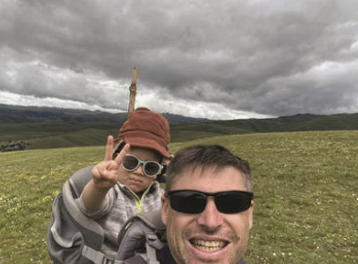

GraceVoir les détails →China Attest m’a accompagnée pour les exigences de traduction et de notarisation de mes documents. J’ai apprécié le temps consacré à clarifier les détails avant de poursuivre. Les réponses étaient utiles, et je me sentais à l’aise pour poser mes questions. Il était rassurant d’avoir quelqu’un pour me guider dans les formalités.
Avis clients.
Avis 33–40 sur 46 · Page 5 sur 6
EthanVoir les détails →J’ai contacté China Attest parce que je ne savais pas comment préparer mes documents pour une notarisation et une traduction. L’équipe a décomposé la procédure en étapes claires et m’a aidé à m’organiser. Elle était professionnelle, accessible et facile à joindre. Merci d’avoir réduit le stress de la préparation.
AmeliaVoir les détails →J’avais besoin de documents de vérification universitaire pour une demande à l’étranger et j’ai contacté China Attest. L’équipe a expliqué les pièces à préparer et a répondu clairement à mes questions. Elle m’a tenue informée tout au long des démarches, ce qui a grandement facilité l’organisation. J’ai été très satisfaite de son aide.

BenVoir les détails →China Attest m’a aidé à obtenir les rapports de vérification CSSD nécessaires à mon évaluation WES. L’équipe a répondu rapidement et a expliqué clairement les exigences documentaires. J’ai apprécié d’avoir un interlocuteur vers qui me tourner lorsque j’avais des doutes sur les pièces. Merci d’avoir rendu la procédure plus facile à gérer.
Lucas & MiaVoir les détails →Nous avions besoin d’aide pour organiser des documents universitaires destinés à l’étranger. China Attest nous a expliqué les exigences de vérification et s’est assuré que nous comprenions les pièces à préparer. L’équipe a été patiente face à nos questions et a communiqué clairement. Nous avons vraiment apprécié son aide pratique.
Taylor & FriendsVoir les détails →Nous organisions des formalités de vérification universitaire depuis l’étranger sans trop savoir comment procéder. China Attest a expliqué les exigences et nous a aidés à organiser les pièces nécessaires. Ses réponses rapides et ses nouvelles régulières étaient rassurantes. Il était utile de bénéficier d’un accompagnement sans devoir être en Chine.
MichaelVoir les détails →J’ai fait appel à China Attest pour mes documents de vérification universitaire. Certains détails me posaient question, et l’équipe a pris le temps de les expliquer avant de poursuivre. J’ai apprécié son approche attentive et sa communication claire. Grâce à son aide, la procédure m’a paru beaucoup plus simple.
EmilyVoir les détails →China Attest m’a aidée à comprendre la procédure de vérification CSCSE et les informations à fournir. Les instructions étaient claires, et l’équipe m’a aidée chaque fois que j’avais des questions. Recevoir le document final par e-mail était pratique. Merci de m’avoir guidée tout au long des démarches.